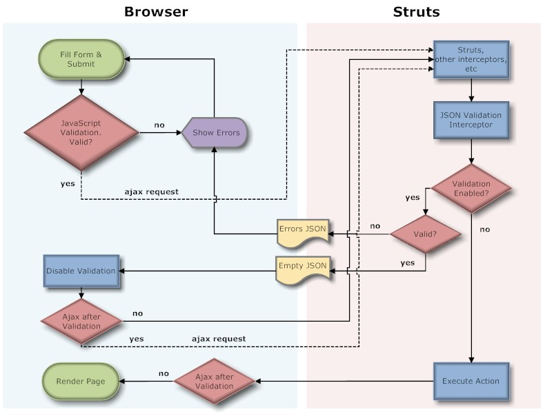

| 2.0.x releases of Struts 2 use DWR for AJAX validation. This documentation refers to version 2.1. |
Description
Struts provides client side validation(using JavaScript) for a few validators. Using AJAX validation, all validators available to the application on the server side can be used without forcing the page to reload, just to show validation errors. AJAX validation has a server side, which is in included the Struts core jar (an interceptor and some utility JavaScript files), and a client side, which is included in the Dojo plugin.
| To use AJAX validation out of the box, install the Dojo plugin. An example is provided on how to use AJAX validation with Prototype, in this case the Dojo plugin is not required. |
Out of the box
Create the action class
Create the validation.xml
Map the Action
AJAX validation is performed by the jsonValidation interceptor. This interceptor is included in the jsonValidationWorkflowStack, and is required in order to perform AJAX validation. Normal results(input, success, etc) should be provided for the action in the case that someone tries to access the action directly, in which case normal validation will be triggered. So, how does the jsonValidation know that it must perform AJAX validation vs regular validation? We will see that in a minute, but you don't need to know that in order to use AJAX validation.
Create the JSP
Things to note on this JSP:
- <sx:head /> must be in the page, to be able to use AJAX functionality.
- The form tag does not have validate set to true, which would perform client validation before the AJAX validation.
- The submit tag must have validate set to true in order to perform AJAX validation.
If validation succeeds, the form will be submitted to the action (where it will be validated again, this time using regular validation). If you want to make this request(the request after validation succeeded) using AJAX (instead of a regular submit), then set the ajaxAfterValidation attribute to true in the submit tag.
| Setting validate to true in the form tag will enable client side, JavaScript validation, which can be used along with AJAX validation (runs before the AJAX validation). |
| Setting validate to true in the tag that will submit the form will enable AJAX validation. The tag in this example is submit, but it could be a, or bind. |
How it works
This interceptor must be placed on a stack, following the validation interceptor. The interceptor itself won't perform any validation, but will check for validation errors on the action being invoked (assuming that the action is ValidationAware).
If you just want to use AJAX validation, without knowing the implementation details, you can skip this section.
When the jsonValidation interceptor is invoked, it will look for a parameter named struts.enableJSONValidation, this parameter must be set to true, otherwise the interceptor won't do anything. Then the interceptor will look for a parameter named struts.validateOnly, if this parameter exists, is set to true, and there are validation errors (o action errors) they will be serialized into JSON in the form:
If the action implements the ModelDrive interface, "model." will be stripped from the field names in the returned JSON. If validation succeeds, an empty JSON string will be returned:
| Remember to set struts.enableJSONValidation=true in the request to enable AJAX validation |
To process this response on the client, the file utils.js distributed with Struts defines an object called StrutsUtils whith the following functions (which will work with the "xhtml" and "css_xhtml" themes):
- getValidationErrors(stringData) : Processes response String and returns a JavaScript object with the validation errors
- clearValidationErrors(formNode) : Removes validation errors from a form
- showValidationErrors(formNode, errorObject) : Shows validation errors on a form, the errorObject parameter is the return value of getValidationErrors
The file utils.js will be included on the page by the head on the Dojo plugin, if you are using another library for AJAX validation (see Prototype example below), then you need to include this file:
and then the validation file specific to the theme being used:
or
| Include utils.js and validation.js(the one for the theme being used), if you are not using the Dojo plugin. |
Example using Prototype
In this example we will rewrite the JSP to use Prototype, instead of the Dojo plugin.
Flow chart of AJAX validation
